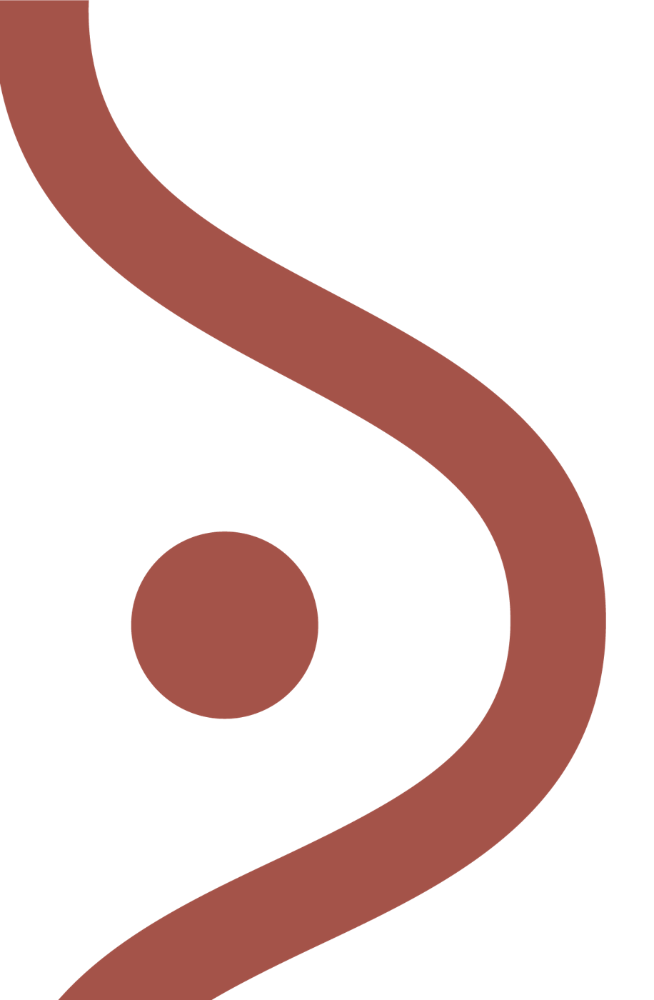

Jailson Soares
Justo Acordo · Recuperação de crédito
PLACAR JUSTO ACORDO
R$ 0123456789,0123456789milhão
já voltaram ao caixa das empresas clientes.
Acordo vira título executivo
Garantia real ou pessoal
100% no êxito

Cobrança extrajudicial 100% no êxito: só recebemos quando o devedor paga.
justoacordo.com.br